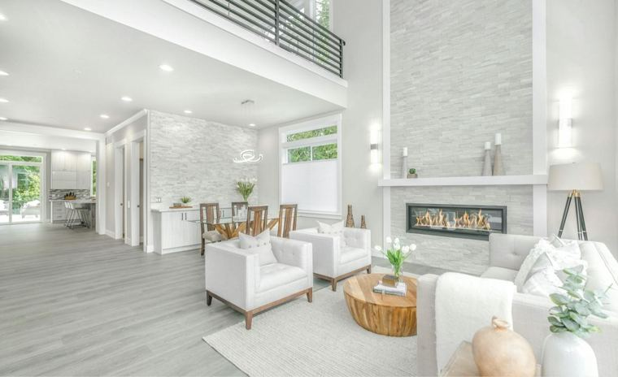

Living in Summerville, SC
Known as Flowertown, Summerville offers a walkable historic district, azalea-lined parks and a strong sense of place along the I-26 corridor.

Getting to Know Summerville
Summerville was incorporated in 1847, and the town has long protected its trees by ordinance. They are still a big part of the town's look, especially in the historic district.
The town is best known for its spring azaleas and for the Flowertown Festival, which has been held in Azalea Park every year since 1972. Buyers come for the downtown and the larger range of home styles.
Talk to a Summerville AgentPlaces Locals Love
Hutchinson Square
The town square, renovated in 2019 with a pavilion styled after a train depot.
Azalea Park
A 12-acre park known for its azaleas, and the home of the Flowertown Festival each spring.
Flowertown Festival
A festival held in Azalea Park every year since 1972.
The Sweet Tea Story
Summerville calls itself the Birthplace of Sweet Tea and set a record in 2016 for the world's largest sweet tea.

Homes in Summerville
The historic district includes bungalows, Charleston single houses, raised cottages and Victorian homes. Outside the district you will find a wide range of newer subdivisions.
About seven in ten homes in Summerville are owner-occupied, according to the Census Bureau. We help buyers compare the historic core with newer neighborhoods nearby.
Check the Tree Rules
Summerville's tree protection ordinance can affect what you are allowed to remove on a lot. If you plan to build or clear land, ask the town before you commit.
Summerville FAQs
Which school district serves Summerville?
Dorchester School District Two serves much of Summerville. Some addresses fall in other districts, so confirm the assigned schools for a specific address.
Which county is Summerville in?
Most of the town is in Dorchester County, and parts reach into Berkeley and Charleston counties.
Why is it called Flowertown?
The name comes from the town's azaleas, which bloom each spring and are the reason for the Flowertown Festival.
Is Summerville historic?
Yes. The town was incorporated in 1847, and its historic district has homes from many eras, from bungalows to Victorians.
Compare Other Cities


Thinking About Summerville?
Tell us what you want in a home and we will send you a custom list of homes for sale in Summerville, then set up tours around your schedule.